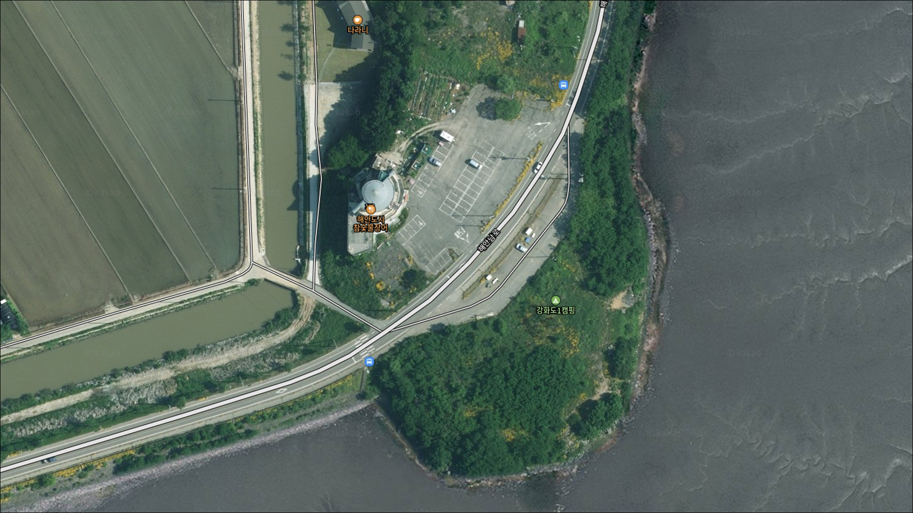
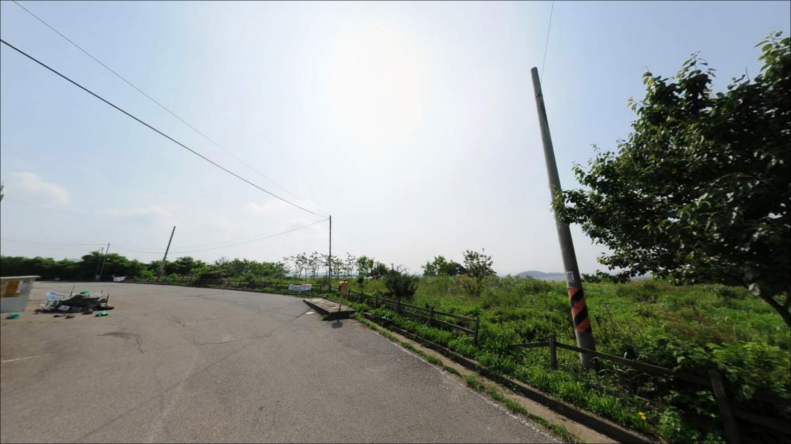
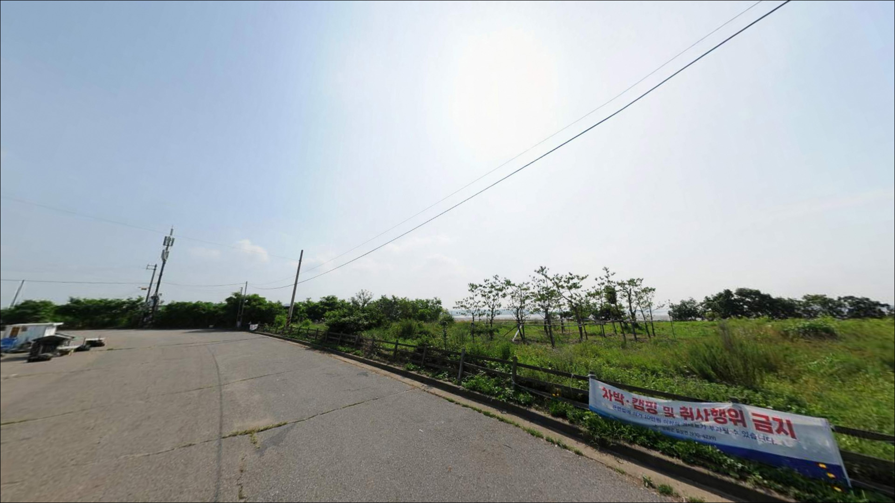
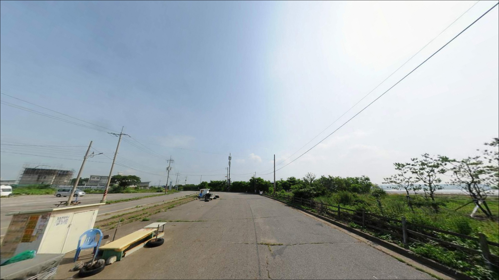
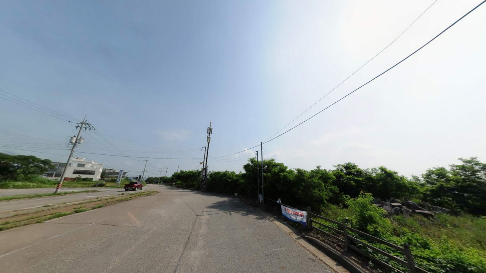
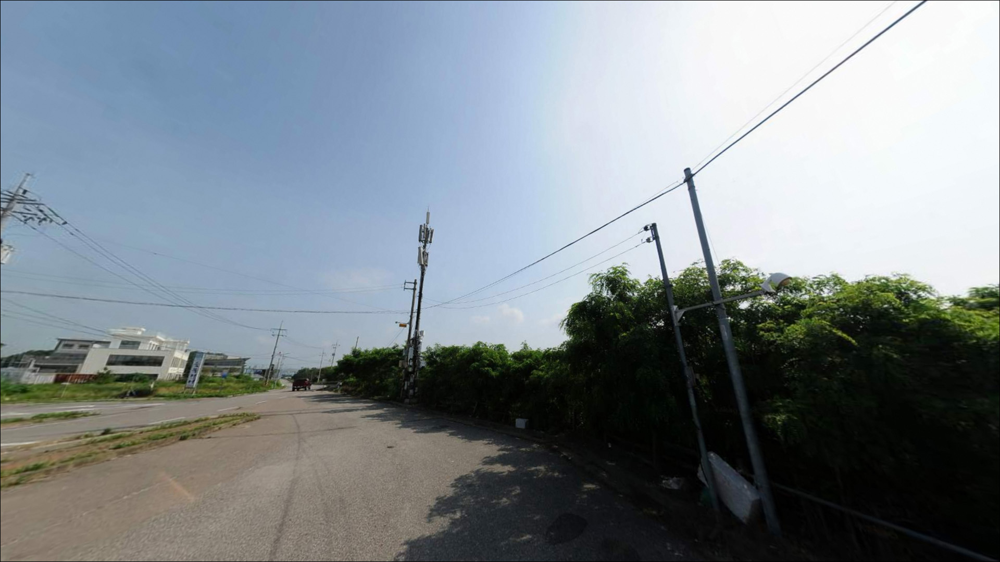
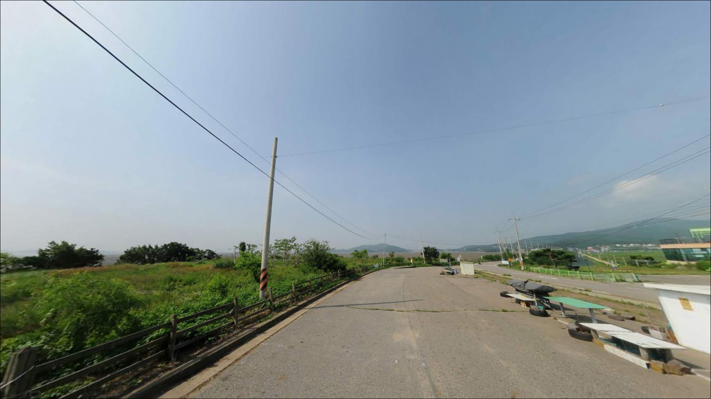
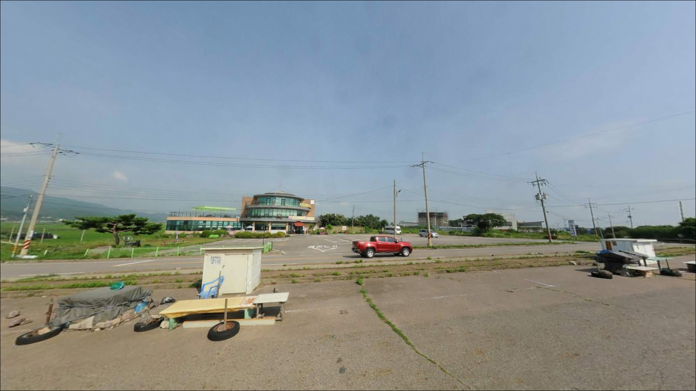
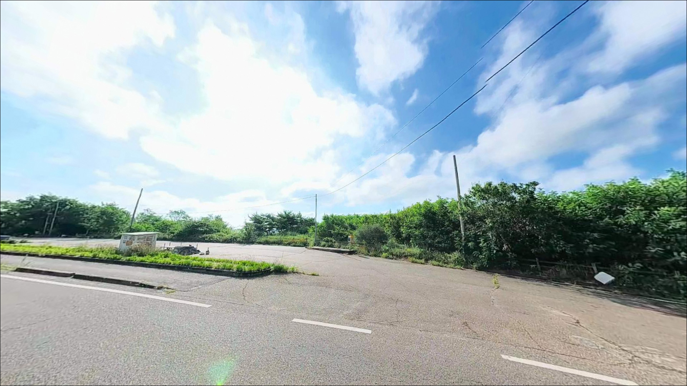

해안도시참숯불장어 건너편 주차장, 강화도 인천 강화군 바다와 가장 가까이 머무는 차박, 낚시 해안 명소


해안도시참숯불장어 건너편 주차장
인천 강화군 길상면 초지리 산 96-14
물때 확인 없이 초지리 해안에 도착하면
간조 구간에서 갯벌이 넓게 드러나
원투 채비가 닿을 수심 자체가 나오지 않습니다.
강화해협의 조수간만 차는 서해에서도 큰 편에 속해,
타이밍을 맞추지 않으면 어떤 채비로도 낚시가 어려운 구조입니다.
이 글은 초지리 해안 공터의
물때 판단 기준, 낚시 스타일 선택,
진입 동선과 차박 체류 조건에 집중합니다.
조황 단정이나 특정 어종 보장은
이 글의 범위에 포함되지 않습니다.

1. 진입 동선과 포인트 접근성
초지대교를 건너 강화 방향으로 진입하면
해안남로가 갯벌을 끼고 이어집니다.
이 도로변에 장어·횟집이 밀집해 있으며,
포인트는 그 중 한 식당 건너편 공터 구간입니다.
해안도로에 직접 붙어 있는 형태라
별도 좁은 진입로 없이 차량 접근이 수월한 편입니다.
공터 형태의 주차 공간이 있는 것으로 보이며
회차도 비교적 어렵지 않을 가능성이 높습니다.
다만 식당 전용 공간 여부는 현장에서 먼저 확인해야 합니다.
캠핑카·대형 차량이라면
주차 여유 여부를 현장에서 확인한 뒤
자리를 잡는 편이 안전합니다.
초지대교 인근이라 교량 조명과 도로 가로등이
야간에도 어느 정도 밝기를 유지할 가능성이 있습니다.
낚시 장비를 내릴 때는
식당 영업 동선을 막지 않는 위치가 우선입니다.

2. 차박 환경과 야간 체류 여건
초지대교·해안남로가 인접해 있어
야간에도 교량 조명과 가로등 불빛이 남는 편입니다.
장어 식당가가 주변에 밀집해 있어
저녁까지는 차량 통행과 상가 불빛이 있지만,
영업 마감 이후에는 상대적으로 조용해지는 편입니다.
완전한 외진 분위기보다는 해안 상가 주변형 차박에 가깝습니다.
프라이버시는 다소 제한적입니다.
조용한 차박을 원한다면 식당가 밀집 구간에서
조금 벗어난 해안도로 쪽을 찾는 것이
현실적인 대안입니다.
초지진 문화재 구역이 약 500m 이내에 위치하므로
취사·야영 가능 여부는 출발 전 강화군청에 확인하는 것이
가장 확실한 방법입니다.


3. 주변 편의시설 및 인프라 현황
해안남로 일대에는 장어·횟집이 다수 영업 중입니다.
식사 편의는 좋은 편이지만,
편의점·주유소 운영 정보는 확정하기 어렵습니다.
초지대교 방향으로 이동하면
인프라를 찾을 가능성이 있으나,
낚시 소품과 얼음·식수는 출발 전에 갖춰두는 편이 안전합니다.
응급 상황을 고려해 강화의료원까지
이동 시간이 상당하므로
비상 약품과 연락 수단은 기본 준비입니다.
공중화장실 위치는 현장에서 직접 확인해야 합니다.

4. 방문 전 준비사항
이 포인트에서 가장 먼저 해야 할 준비는
물때 확인입니다.
강화해협은 서해 조수간만 차가 큰 수역으로,
간조 시 갯벌이 넓게 드러나
채비가 수심 있는 구간까지 닿지 않습니다.
바다타임 기준으로 만조 전후 2~3시간을 낚시 가능 구간으로 잡고
출발 시각을 역산하는 것이 기본 전략입니다.
갯벌 지형 특성상 뻘 바닥이 많아
봉돌 소모가 잦은 편입니다.
조류가 강할 때는 무거운 봉돌로 채비를 잡아야 하므로
다양한 무게의 봉돌을 넉넉하게 준비하는 것이 현실적입니다.
갯벌 가장자리는 빠짐 사고가 발생할 수 있습니다.
단독 갯벌 진입은 피해야 하며,
야간 출조 시에는 헤드랜턴과 구명조끼가 기본 장비입니다.
초지진 일대 문화재 구역과의 경계 여부는
현장 안내판을 통해 직접 확인해야 합니다.

5. 갯벌 해안에서 낚시 타이밍을 가르는 조건
이 포인트의 낚시 여건을 결정하는 것은
지형보다 물때입니다.
갯벌·갯골이 혼재하는 해안 구조는
만조 전후에 갯골을 따라 수심이 깊어지는 구간이 형성되고,
그 구간이 원투 채비가 힘을 발휘할 수 있는 조건을 만들어줍니다.
간조에 가까워질수록 갯벌이 노출되면서
사실상 낚시 가능 구간이 사라지는 편입니다.
조금 전후가 조류 흐름이 완만해
채비 컨트롤 면에서 유리하며,
사리 전후에는 조류가 세져
무거운 봉돌을 쓰지 않으면 채비가 쓸려가기 쉽습니다.
사리 전후보다 조금 전후 타이밍이 이 구조에 맞는 편입니다.
갯골 방향으로 멀리 던질수록 수심이 확보될 가능성이 높아집니다.
장타 원투가 이 해안 특성에 가장 현실적으로 맞는 방식입니다.
최신 조황은 출조 전에 반드시 검색해 보시기 바랍니다.


6. 포인트에 어울리는 낚시 스타일
이 포인트에서 가장 현실적인 낚시 방식은
원투낚시입니다.
갯벌 가장자리에서 갯골 방향으로 멀리 던져
바닥 수심이 확보되는 구간을 노리는 스타일이
이 해안 구조와 가장 잘 맞습니다.
이 권역 해안에서 망둥어 원투가 가장 많이 시도되는 방식이기도 합니다.
붕장어 야간 원투도 이 권역 해안에서
기대해볼 수 있는 방식입니다.
야간 만조 전후에 원투 채비를 세팅하고
입질을 기다리는 스타일이 어울립니다.
야간 출조 시 헤드랜턴과 구명조끼 착용은 기본 조건입니다.
루어낚시는 만조 전후 수심이 확보된 타이밍에
병행해볼 수 있는 방식입니다.
갯골 라인을 따라 지그헤드나 미노우 채비로
천천히 탐색하는 방식이 이 지형과 어울리는 편입니다.
인근 초지항 방파제 수준의 수심을 기대하기는 어렵지만,
만조 전후 짧은 타이밍에 루어를 운용하는 방식은
원투와 함께 병행 탐색으로 활용할 수 있습니다.

7. 대안 포인트와 플랜 B 동선
이 포인트 여건이 여의치 않을 때
가장 먼저 이동할 곳은
초지항 방파제입니다.
동일 해안선 내에서 차량을 방파제 입구 인근까지
붙일 수 있고, 방파제 수심이 상대적으로 깊어
원투·루어 모두 운용이 가능한 곳입니다.
초지대교 남단 수로 구간도
조류 흐름이 살아 있는 편이라
루어·원투 방식을 시도해볼 수 있는 구간입니다.
이 포인트와 큰 이동 거리 없이 연계 탐색이 가능해
초지리 해안 공터를 먼저 확인하고 이동하는 동선이
이 권역에서 효율적입니다.
갯벌 위주보다 구조물 낚시를 선호한다면
초지항 방파제 방향이 먼저입니다.
강화 남부 해안선을 따라
광성보 해안 쪽 원투 포인트도 분포해 있어
권역을 넓게 잡고 이동하는 방식도 가능합니다.

물때 하나만 맞춰도
초지리 갯벌은 달라 보입니다
망둥어 원투나 붕장어 야간낚시를 즐기는 낚시인이라면
이 포인트의 지형 조건은 어울리는 구조입니다.
갯골을 따라 형성되는 수심 구간과
강화해협의 조류 흐름이
장타 원투 방식과 잘 맞는 편이기 때문입니다.
반면 물때 계산 없이 도착하거나
간조 구간에 진입하면
갯벌만 보고 돌아가는 상황이 생기기 쉽습니다.
만조 전후 타이밍, 초지진 구역 확인, 자급 준비,
이 세 가지를 갖추고 가면
기대해볼 수 있는 포인트입니다.
조용하고 외딴 차박지를 원하는 분께
이 포인트는 다소 분주한 느낌을 줄 수 있습니다.
낚시 후 장어 식당가에서 간단히 끼니를 해결하고
갯벌 옆에서 하룻밤 머무는 형태라면,
문화재 구역 확인 하나만 해두면
낚시와 차박을 함께 엮기에 나쁘지 않은 선택입니다.